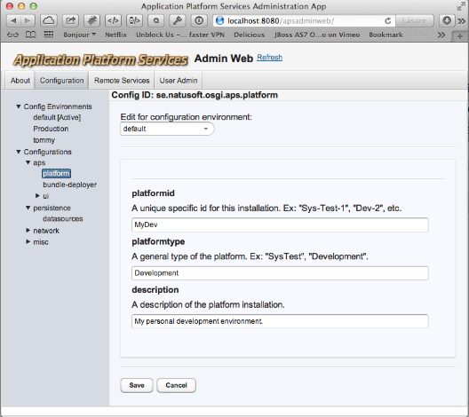
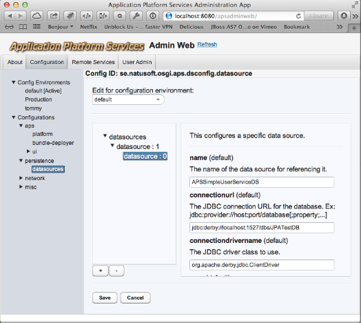

 
This allows editing configurations registered with the APSConfigService. Configurations are only available in the APSConfigAdminWeb while the bundle providing the configuration model are deployed. The actual saved configurations live on disk and remains after a bundle is stopped. It will be available again when the bundle is started again. But the bundle have to be running and regisitering its configuration with the APSConfigService for them to be editable in this admin app!
As can be seen in the screenshots above it provides a simpler gui for simple configs, and a more advanced gui for structured configurations containing list of other configuration models.
Under this node all available configuration environments are listed. Right clicking on the node will drop down a menu alternative to create a new configuration environment. Right clicking on a configuration environment pops up a menu that allows it to be set as active configuration environment or to delete the configuration environment. Just clicking on a configuration environment allows it to be edited on the right side. The active configuration environment cannot however be edited, only viewed.
This tree cannot be edited. What is here is the configurations registered by bundles. They can be selected to edit the selected configuration to the right. The screenshots above shows 2 examples of such. Please note that the screenshots were taken on a Mac with Mountain Lion and thus does not show scrollbars unless scrolling. The right side of the second screenshot where things are slightly cutoff at the bottom are scrollable!
On top of the right side box there is a dropdown menu that shows/selects the configuration environment you are editing configuration values for. Only configuration values that are marked in the configuration model as being configuration environment specific will get different values per configuration environement. Those values that are configuration environment specific are identified by having the configuration environment in parentesis after the configuration value key. If you switch the configuration environment in the top dropdown menu you will se that these values change.
Boolean configuration values will be shown as checkboxes. Date configuration values will have a date field where the user can write a date or click the button on the end to bring upp a calendar to select from. Date configuration values can also specify the date format (as described here) in the configuration model. This is used to display the date in the field and parse any entered date. So different date fields can have different formats!
The configuration models are annotated and provide descriptions of the values which are shown in the gui to make it easy for the person doing the configuration to know what the configuration is about.
As soon as the configuration changes are saved they become active. The code using the configurations doesn’t need to do anything. The next reference to a configuration value will return the new value.
Also se the APSConfigService documentation.